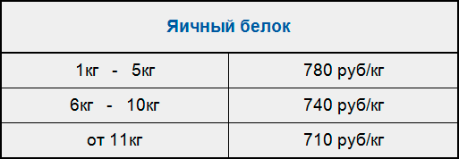

Яичный белок


{kind=link}
{kind=link}

Вода (102°C) - max.0,5 %
Жир - 13 %
Углеводы - max.4 %
В том числе сахар - 0 %
Энергетическая ценность (калорийность) в рачете на
100 грамм продукта: 361 ккал/1511кДж
Незаменимые аминокислоты: |
Условно-незаменимые аминокислоты: |
Заменимые аминокислоты: |
| Треонин - 4,5 | Аргинин - 10,5 | Аспаргиновая кислота - 6,8 |
| Валин - 5,6 | Цистин - 1,9 | Серин - 5,6 |
| Метионин - 2,9 | Тирозин - 3,1 | Глицин - 2,8 |
| Изолейцин - 4,6 | Гистидин - 5,5 | Аланин - 4,9 |
| Лейцин - 6,7 | Пролин - 2,8 | |
| Фениланин - 4,7 | Глютамин и предшественники - 10,7 | |
| Лизин - 4,6 | ||
| Триптофан - 1,1 |
Холестерин - 16
Кальций- 400
Цвет:кремово-белый
Внешний вид:тонкоизмельченный порошок без комков
Белки в отличие от жиров и углеводов не откладываются в организме про запас и должны ежедневно вводиться с пищей в достаточном количестве.
Физиологическая суточная норма белка зависит от возраста, пола и профессиональной деятельности.
Взрослому человеку в обычных условиях жизни при легкой работе требуется в сутки в среднем 1,3-1,4 г белка на 1 кг веса тела, а при физической работе — 2 - 2.5 г и более (в зависимости от тяжести труда).
Белки куриных яиц
Цельный яичный белок имеет наивысшую усвояемость и считается эталонным, относительно которого оцениваются все остальные белки. Как известно куриное яйцо состоит из белка, который практически на 100% состоит из альбумина (овоальбумина) и желтка, который содержит 7 различных белков - альбумин, овоглобулин, коальбумин, овомукоид, овомуцин, лизоцин, авидин.
Также необходимо отметить, что употреблять в пищу большого количества сырых куриных яиц не рекомендуется, так как они содержат ингибитор (вещество значительно замедляющее процесс переваривания) пищеварительного фермента трипсина. Более того, белок авидин, содержащийся в желтке, жадно присоединяет к себе жизненно важный биотин (витамин Н), образуя прочный комплекс, который не переваривается и не усваивается организмом. Поэтому рекомендуют употреблять куриные яйца только после термической обработки (при 70°С разрушается ингибитор трипсина, а при 80° С высвобождается активный биотин из биотин-авидинового комплекса).
Японские и тайваньские ученые решили выяснить влияние яичного белка на организм человека. В эксперименте участвовали три группы женщин - добровольцев. Все они были практически здоровы, но с повышенным уровнем холестерина в крови. Испытуемые ели диетически приготовленную пищу из расчета 1750 калорий в день с ежедневным потреблением 70 грамм протеина. Жир в рационе испытуемых составлял 20 процентов протеина от общего числа калорий. Тридцать процентов протеина первая группа получала из яичного белка, вторая группа - из сыра, и третья - из соевого сыра. Вес тела и ежедневные физические упражнения оставались неизменными в продолжение всего исследования. Как выяснилось в результате эксперимента, у групп, получавших протеин из яичного белка и соевого сыра, общий уровень холестерина понизился, причем, у первой группы, кроме того, увеличился уровень "хороших" липопротеинов. У третьей группы, получавшей сыр, уровень холестерина в крови возрос.
Эти данные раскрывают полезные качества яичного белка, но как относиться к яйцу в целом?
Еще одно исследование, опубликованное в "Annals of Nutrition and Metabolism" в 1996г, показало, что употребление яиц в течение дня понижало уровень липопротеинов высокой плотности (полезного холестерина). Считается, что последний препятствует развитию атеросклероза. Хотя на первый взгляд это указывает на то, что яйца не такие уж полезные, более пристальный взгляд помогает найти простое решение. Вызываемый употреблением яиц отрицательный эффект связан с повышенным окислением, которому благоприятствует употребление целых яиц благодаря высокому содержанию в них полиненасыщенного жира. Полиненасыщенные жиры особенно склонны к окислению, включая широко расхваленные омега-3 жиры, содержащиеся в рыбе и льняном масле. Тем не менее, вы можете легко предотвратить повышенное окисление жира просто путем употребления антиоксидантов. Они включают в себя витамины С, Е, РР, селен и бета-каротин. Такие натуральные антиоксиданты стабилизируют полиненасыщенные жиры, предотвращая окисление.
Все это теория, а как же дело обстоит на практике?
90% бодибилдеров имеют возраст меньше 30 лет и лишены проблем с повышенным уровнем холестерина в крови, эти факторы практически полностью устраняют возможность возникновения патологических изменений в жировом метаболизме выражающихся в гиперхолестеринемии. Кроме того, холестерин - это неотъемлемая часть клеточных мембран, и в растущем организме недостаток холестерина чреват торможением физического развития и другими проблемами. А поскольку бодибилдинг подразумевает, прежде всего, рост мышечной массы, то элементарная логика подсказывает, что расходы холестерина будут выше, чем в популяции. И главное, каждый культурист должен включать в свой рацион дополнительно витамины. Как уже говорилось выше, витамин А, С и Е, обладают выраженными антиоксидантными свойствами, которые обеспечивают практически полную безопасность употребления цельных яиц. Что касается жиров, то при наборе массы тела их количество не повлияют на общие результаты, так относительное их содержание не так велико. Не надо забывать, что в желтках содержатся большое количество витаминов, микроэлементы и биоактивные вещества.
Таким образом, становится понятно, что употребление яиц в пищу целиком не только не опасно, но и полезно, особенно при наборе массы. Если вы снижаете массу тела, то следует отказаться.